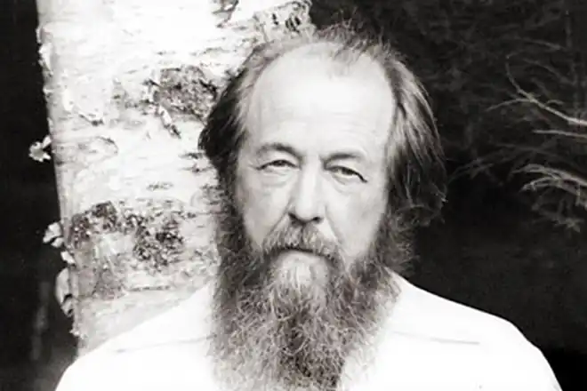
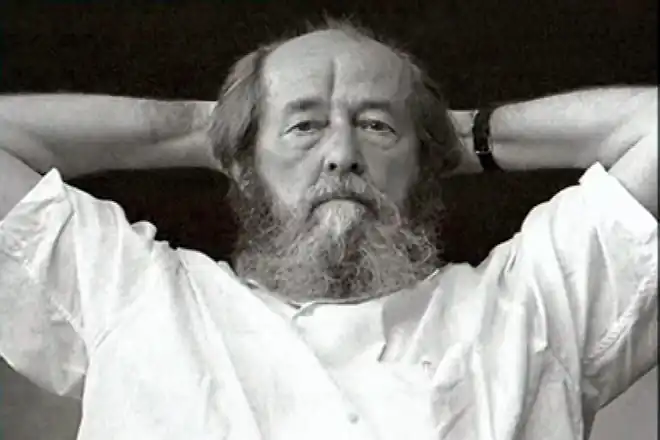
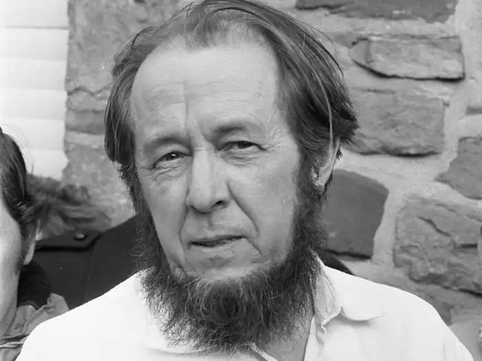
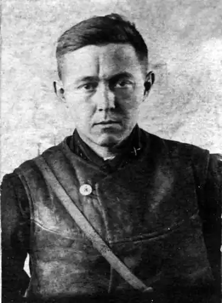

Олександр Солженіцин Ісаєвич (1918-2008). Народився 11 грудня 1918 року в Кисловодську. Російська письменник, дійсний член РАН з 1997 року.
Солженіцин народився через кілька місяців після смерті батька. У 1924 році сім'я переїжджає в Ростов-на-Дону; там в 1936 році Солженіцин вступає на фізико-математичний факультет університету (закінчив у 1941 році). У жовтні 1941 року Солженіцин був мобілізований; після закінчення офіцерської школи (кінець 1942 року) — на фронті; 9 лютого 1945 року Солженіцин заарештований за різкі антисталінські вислови в листах до друга дитинства Н. Віткевича; містився в Луб'янській та Бутирській в'язниці. 27 липня засуджений на 8 років виправно-трудових таборів (за статтею 58, п. 10 і 11).
Враження від табору в Новому Єрусалимі, потім від роботи укладених у Москві (будівництво будинку в Калузької застави) лягли в основу п'єси "Республіка праці" (початкове назва "Олень і шалашовка", 1954). У червні 1947 року переведений у Марфинскую "шарашку", пізніше описану в романі "У колі першому". З 1950 році в экибастузском таборі (досвід "загальних робіт" відтворений у розповіді "Один день Івана Денисовича"); тут він захворює раком (пухлина видалена в лютому 1952 року). З лютого 1953 року Солженіцин на "вічному ссыльнопоселении" в аулі Кок-Терек (Джамбульская область, Казахстан). В лютому 1956 року Солженіцин реабілітований рішенням Верховного Суду СРСР, що робить можливим повернення в Росію: він учителює в рязанській селі, живучи у героїні майбутнього оповідання "Матрьонін двір". З 1957 року Солженіцин в Рязані, викладає в школі. Після падіння Хрущова боротьба проти Солженіцина наростає: вересні 1965 року КДБ захоплює архів письменника; перекриваються можливості публікацій, надрукувати вдається лише розповідь "Захар-Калита" ("Новий світ", 1966, № 1); тріумфальне обговорення "Ракового корпусу" в секції прози Московського відділення Союзу письменників не приносить головного результату — повість раніше під забороною. У травні 1967 року Солженіцин у Відкритому листі делегатам Четвертого з'їзду письменників вимагає скасування цензури. Робота над "Архіпелагом..." (закінчена в 1968 році) і книгою про революції перемежовується боротьбою з письменницьким керівництвом, пошуком контактів з Заходом (1968 році "У колі першому" і "Раковий корпус" опубліковані за кордоном). У листопаді 1969 року Солженіцин виключений зі Спілки письменників. Після того, як за кордоном вийшов в світ перший том "Архіпелагу", 12-13 лютого 1974 року Солженіцин був заарештований, позбавлений радянського громадянства і висланий у ФРН. З Німеччини Письменник перебрався в Цюріх. Але недовго проживши там, отримавши в Стокгольмі Нобелівську премію (грудень 1975 року), в 1976 році переселяється в США. Основною роботою письменника на довгі роки стає епопея "Червоне Колесо". Після краху радянського режиму, 27 травня 1994 року Солженіцин повертається в Росію. Проїхавши країну від Далекого Сходу до Москви, він активно включається в суспільне життя. Збереження людської душі в умовах тоталітаризму і внутрішнє протистояння йому — наскрізна тема оповідань "Один день Івана Денисовича" (1962), "Матрьонін двір", повістей "В колі першому", "Раковий корпус", вбирающих власний досвід Солженіцина: участь у Великій Вітчизняній війні, арешт, табори (1945-1953), посилання (1953-1956). "Архіпелаг ГУЛАГ" (1973 рік, в СРСР нелегально поширювався), — "досвід художнього дослідження" державної системи знищення людей у СРСР; отримав міжнародний резонанс, вплинув на зміну громадської свідомості, в т. ч. на Заході. У статтях "Каяття і самообмеження як категорії національного життя", "Жити не по брехні", "Лист вождям Радянського Союзу" (1973 рік) Солженіцин передрікав крах соціалізму, розкривав його моральну та економічну неспроможність, відстоював релігійні, національні і класичні ліберальні цінності. Ці теми, як і критика сучасного західного суспільства, заклик до особистого і громадської відповідальності розвинені в публіцистиці Солженіцина періоду вигнання з СРСР (з 1974 року в ФРН; з 1976 року — в США, шт. Вермонт; повернувся в Росію в 1994 році), в т. ч. — новітній ("Як нам облаштувати Росію", 1990; "російське питання" до кінця 20 століття", 1994; "Росія в обвалі", 1998). Автобіографічна книга "Буцався теля з дубом" (1975; доповнено в 1991 року) відтворює суспільну і літературну боротьбу 1960 — початку 1970-х рр.., у зв'язку з публікацією його творів в СРСР. Нобелівська премія (1970). В 2001-2002 рр. вийшло двотомне видання письменника "Двісті років поруч" (Дослідження новітньої російської історії), присвячений російсько-єврейським відносин. Книжка викликала неоднозначну реакцію. А.І. Солженіцин помер 3 серпня 2008 року в Троїце-Лыкове. Похований в некрополі Донського монастиря.